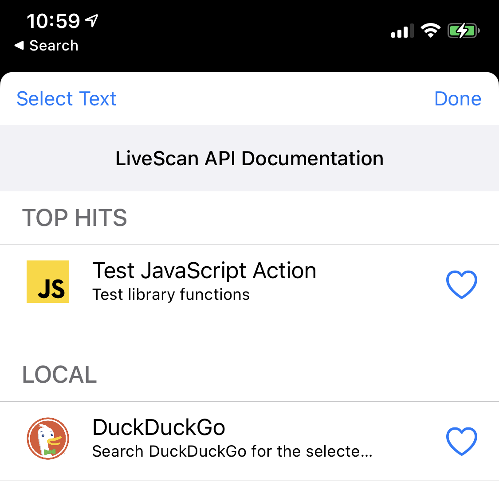
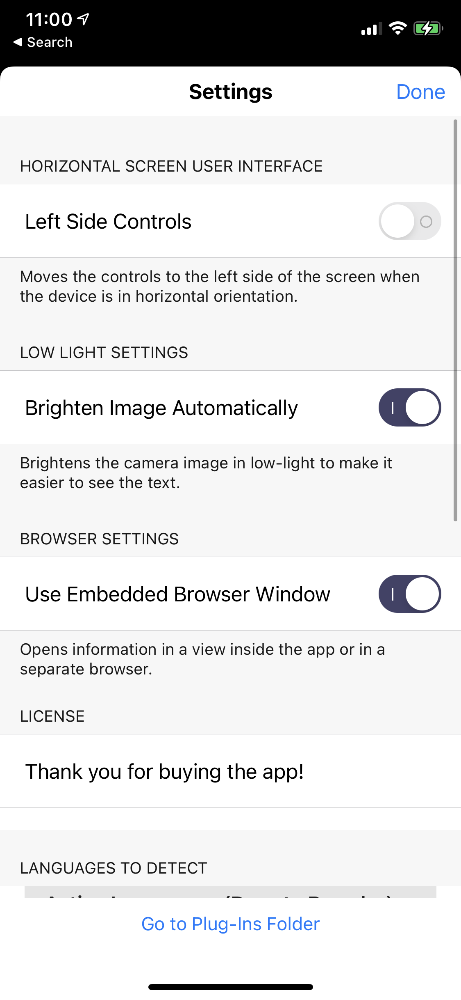
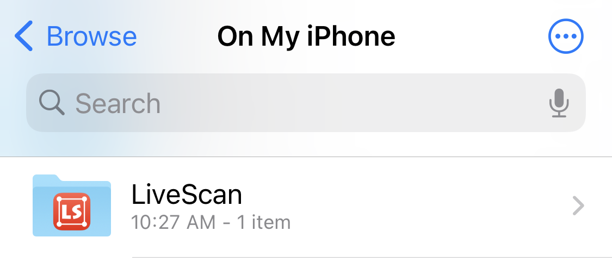

LiveScan API Documentation

Installing Plugins
iOS
If you have not installed plugins before, you must first inform iOS that you wish to make the application's plugin folder accessible in Files. To do this, follow the steps below:- Launch LiveScan and open Settings, using the gear icon in the tray at the bottom of the screen.
-
Press
Go to Plug-Ins Folderat the bottom of the pop-over.

After you have done this, the LiveScan folder should now be accessible via the On My iPhone section of the Files app. Simply place your plugin files inside, and LiveScan will load them automatically.
macOS
Because LiveScan is sandboxed, macOS hides the plugins folder from you. To access it, follow the steps below:- launch LiveScan.
-
Open LiveScan's menu and press
Manage Plug-Ins. A Finder window will open showing the plugins folder. - Drag a plugin file into the folder to add it to LiveScan, or remove it from the folder to remove it from LiveScan.
Creating a JavaScript Plugin
Your JavaScript plugin must at minimum contain the following:
function runAction(str){
//LiveScan invokes this function when it runs your plugin. Process the string inside here. Any returned value is ignored.
}
function getDetails() {
//Here you must return a struct containing details about your plugin.
//Note: These fields are cached. If you make a change to getDetails, you must reload LiveScan for your changes to take effect.
return {
"name": "Name of action to display",
"desc": "Subtitle text of action"
}
}
JavaScript API Reference
openURL(string)
Open the supplied URL in the application's embedded web browser. This function does not block.
alert(body, title)
Display an alert with a body and optional title. This function does not block.
copyToClipboard(string)
Copy the passed string to the device's clipboard.
Creating a JSON Plugin
If you do not need all of the power that JavaScript provides and instead simply want to open a URL in the embedded browser, you can create a JSON plugin.
Your JSON plugin must contain the following:
{
"name": "The name of the action",
"desc": "A short description of the action",
"target": "https://url-here.com/"
}
https://url-here.com/cat.